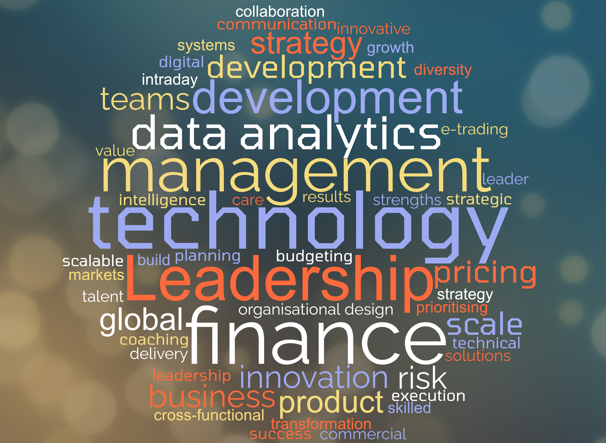
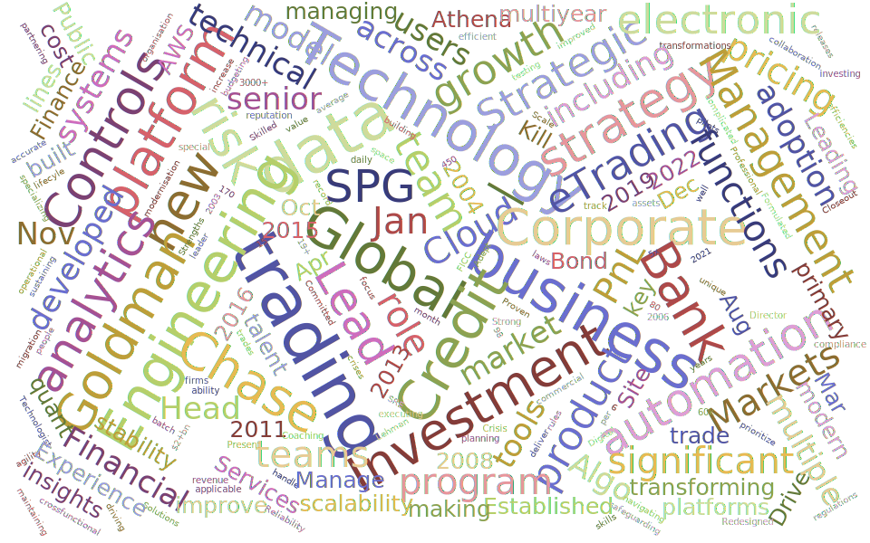

Intro: Hello and welcome!
My journey started in the beautiful mountains of Kashmir and brought me to my current home in the United Kingdom. When I'm not working,
I enjoy spending time with my family, exploring nature's wonders like mountains and seas, and discovering new places and cultures. I love good
food, and sometimes I even put my cooking skills to the test. I also enjoy capturing moments through my camera.
I was lucky to study in a multicultural place, filled with diversity and surrounded by natural beauty.
I hold a Master's degree in eBusiness Management from the University of Warwick, with a focus on
technology management, digital transformation, strategy, and general management. Additionally, I have a Bachelor's degree in Computer Engineering.
Based in London, I serve as a technology leader in the financial services sector, with two decades of professional experience under my belt.
However, my relationship with technology extends even further back to my early childhood, where I began my journey of tinkering and
exploring the digital world.
I strongly believe in the power of technology. It's more than making our lives easier, it also solves complex problems around the world, including business.
I am equally captivated by the positive aspects of human nature and our ingenious ability to craft wonderful solutions. As a lifelong learner, I'm always looking
for new knowledge and experiences to help me grow.
I invite you to explore my site to learn more about my experiences, insights, and the unique value I bring to the
intersection of technology and financial services. I'm excited to share my journey with you. Welcome aboard!
Guiding Principles (AKA) North Star

- Preferred management style: Servant Leader.
- Team: Play to team strength, help others to be best of what they can be.
- Learn & evolve.
- Leave everything better than how you found it.
- Do the right thing, rest will follow.
- Be aware of own ignorance and watch out for assumptions/bais.
- Start with an open mind.

Looking at what I learned over the years, thought of putting a list. Criteria: I spent more than a quater tinkering/applying in real situation.
Leadership/Management:
- Engineering Management
- Technology Management
- Business Technical strategy
- Technology Strategy
- Product Strategy
- Automation
- Product Management
- Talent Management
- Coaching
- Team building
- Financial Management
- Transformation
- Change Management
- Global Team Management
- Remote Management & team setup
- Innovation
- Business solutions development
- Risk & Controls
Technical:
Languages/Scripts:
- Python
- PHP
- ASP.net
- VBA
- C#
- Java
- JavaScript
- SQL
- HTML
- CSS
- C/C++
Frameworks:
Tools:
- Git/GitHub
- CI/CD
- Excel - Advance
- MySQL, PostGres
- AWS Cloud Practioner (Jan 2022)
- Platform development
- Data Analytics
- Quantative development
- Trading Systems
- Data – Realtime/Time Series/Stores
- UI/UX design
- Process re-engineering
- Automation
- Modern SDLC
- Agile
Industry:
- Fixed Income Products: Bonds, CDS, Index, ETF, Rates and more
- Secondary Products: Equities, Options, Futures, FX, Emerging Markets and more
- Electronic Trading/Electronic Market Making
- Trade Capture: Voice, Electronic and Automated.
- Trading Systems
- Systematic Market Making
- Market Data
- Market Making
- Market Risk
- Credit Markets
- Securitised Products
- Trading, Risk and PnL
- Innovation
- Cloud migration
- Controls and Workflows
- Digital transformation
- Regulatory Reporting
- Regulatory Compliance
Vendor/Platforms:
- Amazon Web Services (AWS)
- Google Cloud Platform (GCP)
- Microsoft Office - Advance
- Microsoft SSAS
- Microsoft SSRS
- Microsoft SSIS
- Tableau
- Qlik
- Alteryx
- ION
- OpenFin
- Bloomberg
- Reuters
- Markit
- Tradeweb
- MarketAxess
- Palintir
- Maxler
- OneTick
- Adobe Photoshop, Premier
- Atlassian Jira, Confluence
- Microsoft Project
- Microsoft Visio
- GitHub
- BitBucket
- KDB/q
- Murex
- Splunk
- Grafana/Kibana
- AppDynamics
Work

In my professional journey, I enjoy leveraging technology and data to augment business capabilities and drive progress
on a global scale. This passion drives my work and shaped my career path. For a considerable time, I have had the privilege
of serving as a technologist at JPMorgan, collaborating with exceptional individuals
across various locations on numerous projects.
These experiences have been invaluable, constantly challenging me to learn and grow.
Throughout my career, I have taken lead and successfully executed complex projects, tackling significant challenges and overcoming
technical obstacles on a global scale. These endeavours have exposed me to the pivotal role of technology, managing cross-functional
teams across borders, strategic planning, and diverse roles in product development and engineering. Along the way, I've worked alongside
some of the brightest minds in the industry and learned a lot from them, both in work and in life.
I started off working on pricing software engineering/quantative development in the Credit Fixed Income. Over the years, I have transitioned
across various roles and projects, assuming the roles of developer, business analyst, project manager, program manager, product manager, solution architect, engineering manager, technology leader, and strategist. This dynamic progression has enriched my skill set and provided invaluable insight.
I've always aimed to use my tech skills to fix (business) problems and add value to the company. The projects I've worked on have been complex and often complicated, giving me the chance to come up with innovative solutions that scale with strong operational design. Sometimes,
I had to work within limits, and this helped me develop my own way of leading and managing.
In summary, my professional ethos centres around harnessing technology and data to empower individuals, drive global progress, and create meaningful value for businesses. The lessons learned, the collaborative efforts, and the transformative experiences have all shaped my
professional journey and continue to inspire me.
Functional experience
Technology leadership, Engineering management, Quantative development, Financial Engineering, Program management,
Project management, Product management, Data and Digital transformation, RAD development, UI Lead, Innovation,
Growth and Scale.
Key Strengths:
Technology Leadership & Strategy | Business Solutions Development | Coaching & Developing Teams | Data & Digital Transformation | Innovation | Growth & Scale
Find more on LinkedIn. Scan or click
Reading

These are the things that have inspired me the most or changed the way I live.
Memos/Articles/Blogs
Books
Still reading, soon to be updated!
About
Contact